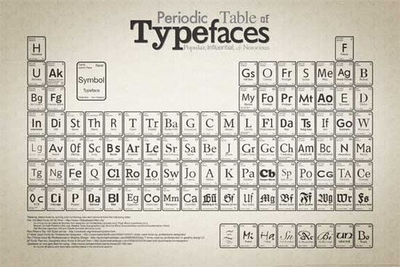

Sat, 28 Aug 2010 20:07:00 · infographic · typography · helvetica · futura · bodoni · univers · typeface · Aksident-Grotesk · font · design · tdc · paulshaw
Infographic: Periodic Table of Typefaces
~ Most Popular, Influential and Notorious Typefaces Visualized ~
To all Typography-freaks out there, this awesome Infographic is dedicated for your viewing pleasure!

In this periodic table, it appears that Helvetica [still] is ‘the’ most popular typeface used according to rank; followed closely by the endearing Futura, the classic Bodoni, the friendly Univers, and the elegant Aksident-Grotesk in the top five list.
For more augmented view of the Typeface Periodic Table, see here. If you curious to see the list of Top 100 Typefaces of all time, see survey by Paul Shaw.